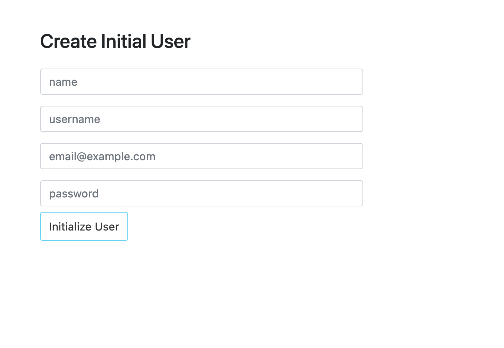

Install Using TAR Archive
IMPORTANT NOTE: It is recommended to create a separate user to run Padas, other than root. In our examples, we use padas as both the user and group name. Following is an example on how to create such user:
sudo useradd -d /opt/padas -U padas
Padas installation folder structure:
| Folder | Description |
|---|---|
/bin |
Scripts for starting/stopping services |
/etc |
Configuration files |
/libs |
Jar files |
/logs |
Log files |
/var |
Runtime state store location (default, but configurable) |
Step 1: Download
-
Download the latest version of Padas Engine and UI components applicable to your platform.
wget https://padas.io/assets/downloads/padas-{{ current_version }}.tgz wget https://padas.io/assets/downloads/padas-ui-{{ current_version }}-linux-x64.tgz -
Use the
tarcommand to decompress the archive filetar -xzf padas-{{ current_version }}.tgz tar -xzf padas-ui-{{ current_version }}-linux-x64.tgz -
Once extracted, you should have
padasandpadas-uidirectories. By default, Padas Engine expects Kafka to be running onlocalhost. If that's not the case, editpadas/etc/padas.propertiesaccordingly.
At this stage, make sure you have Confluent Kafka is running as mentioned in prerequisites.
NOTE: You can install these components in a distributed environment. For possible configuration options, please refer to Configuration File Reference.
Step 2: Start Engine
-
Start engine node on the console. The script will ask you to accept the license agreement (enter
y)cd padas/bin/padas start-console PADAS SOFTWARE LICENSE AGREEMENT ... Displayed Padas Software License Agreement contents can also be found at https://padas.io/legal/eula.html OR in file /<YOUR INSTALL DIR>/padas/etc/license.txt Do you agree with this license? [y/n]: y INFO Verifying Kafka broker connection... INFO Successfully verified Kafka Cluster connection. INFO Successfully verified existence of all required topics. INFO Starting web interface at https://<HOSTNAME>:8999 ... @@@@@@@@@@@@@@@@@@@@@@@@@@@@@@@@@@@@@@@@@@@@@@@@@@@@@@@@@@@@@@@@@@@@@@@@@@@@ @@@@@@@@@@@@@@@@@@@@@@@@@@@@@@@@*@@@@@@@@@@@@@@@@@@@@@@@@@@@@@@@@@@@@@@@@@@@ @@@@@@@@@@@@@@@@@@@@@@@@@@@@@:**@@@@@@@@@@@@@@@@@@@@@@@@@@@@@@@@@@@@@@@@@@@@ @@@@@@@@@@@@@@@@@@@@@@@@@@@:****:@@@@@@@@@@@**:****@@@@@@@@@@@@@@@@@@@@@@@@@ @@@@@@@@@@@@@@@@@@@@@@@@@**********:::**********@@@@@@@@@@@@@@@@@@@@@@@@@@@@ @@@@@@@@@@@@@@@@@@@@@@@:***********************@@@@@@@@@@@@@@@@@@@@@@@@@@@@@ @@@@@@@@@@@@@@@@@@@@@@************************:@@@@@@@@@@@@@@@@@@@@@@@@@@@@@ @@@@@@@@@@@@@@@@@@@@@**************************@@@@@@@@@@@@@@@@@@@@@@@@@@@@@ @@@@@@@@@@@@@@@@@@@@*****************************@@@@@@@@@@@@@@@@@@@@@@@@@@@ @@@@@@@@@@@@@@@@@@@********************************&@@@@@@@@@@@@@@@@@@@@@@@@ @@@@@@@@@@@@@@@@@@#***********************************::@@@@@@@@@@@@@@@@@@@@ @@@@@@@@@@@@@@@@@@**:************************************@@@@@@@@@@@@@@@@@@@ @@@@@@@@@@@@@@@@@@@@@@@@******************************@@@@@@@@@@@@@@@@@@@@@@ @@@@@@@@@@@@@@&*@@@@@@@@@@*************************@@@@@@@@@@@@@@@@@@@@@@@@@ @@@@@:**********@@@@@@@@@@@***********************@@@@@@@@@@@@@@@@@@@@@@@@@@ @@@@***********:@@@@@@@@@@@@********************o@@@@@@@@@@@@@@@@@@@@@@@@@@@ @@@@***********@@@@@@@@@@@@@*******************:@@@@@@@@@@@@@@@@@@@@@@@@@@@@ **************o@@@@@@@@@@@@@*******************:@@@@@@@@@@@@@@@@@@@@@@@@@@@@ **************@@@@@@@@@@@@@********************:@@@@@@@@@@@@@@@@@@@@@@@@@@@@ @:::o:********@@@@@@@@@@@@:********************:@@@@@@@@@@@@@@@@@@@@@@@@@@@@ @@@@@@@o*******@@@@@@@@@@**************o@@@#****8@@@@@@@@@@@@@@@@@@@@@@@@@@@ @@@@@@@@*******:@@@@@@@:***********@@@@@@@@@@@@@@@@@@@@@@@@@@@@@@@@@@@@@@@@8 @@@@@@@@**********:@**************@@@@@@@@@@@@@@@@@@@@@@@@@@@@@@@@@@@@@@@@@* @@@@@@@:*****************************:8@@@@@@@@@@@@@@@@@@@@@@@@@@@@@@@@@@@@& @@@@@@:***********************************@@@@@@@@@@@@@@@@@@@@@@@@@@@@@@@@:@ @@@@@@o****************************************@@@@@@@@@@@@@@@@@@@@@@@@@:*@@ @@@@@@o********************************************:*@@@@@@@@@@@@@@@@@:**@@@ @@@@@@@@@******************************@::****************************:@@@@@ @@@@@@@@@@*@@:******#@@@@@@@@@*********@@@@@@@@8**:****************@@@@@@@@@ @@@@@@@@@*****@@*****:8@@@@@@@@@8*********@@@@@@@@@@@@@@@@@@@@@@@@@@@@@@@@@@ @@@@@@@@@*****@@@:******@@@@@@@@@@@@:*****@@@@@@@@@@@@@@@@@@@@@@@@@@@@@@@@@@ @@@@@@@@****&@@@@@@*****@@@@@@@@@@@@@@****@@@@@@@@@@@@@@@@@@@@@@@@@@@@@@@@@@ @@**@@@****@@@@@@@@#***#@@@@@@@@@@@@@@****@@@@@@@@@@@@@@@@@@@@@@@@@@@@@@@@@@ @@******:***@@@@@@@@***@@@@@@@@@@@@@@@****@@@@@@@@@@@@@@@@@@@@@@@@@@@@@@@@@@ @@@:&@@@@@@@@@@::@@*****:o@@@@@@@o***********@@@@@@@@@@@@@@@@@@@@@@@@@@@@@@@ @@@@@@@@@@@@@@@:*****8#@:*#@@@@@@8*@*8@@@@@@@@@@@@@@@@@@@@@@@@@@@@@@@@@@@@@@ @@@@@@@@@@@@@@@&@*@@@@@@@@@@@@@@@@@@@@@@@@@@@@@@@@@@@@@@@@@@@@@@@@@@@@@@@@@@ @@@@@@@@@@@@@@@@@@@@@@@@@@@@@@@@@@@@@@@@@@@@@@@@@@@@@@@@@@@@@@@@@@@@@@@@@@@@ ____ _ ____ _ ____ | _ \ / \ | _ \ / \ / ___| | |_) / _ \ | | | |/ _ \ \___ \ | __/ ___ \| |_| / ___ \ ___) | |_| /_/ \_\____/_/ \_\____/ INFO Starting App using Java 11.0.10 on <HOSTNAME> with PID 32965 (/<YOUR INSTALL DIR>/padas/libs/padas-0.0.1.jar started by selim in /<YOUR INSTALL DIR>/padas) INFO No active profile set, falling back to default profiles: default INFO Started App in 12.536 seconds (JVM running for 66.174)NOTE: If Padas is configured to utilize Kafka (
padas.config.store=kafkain properties file) to store configurations you will need to create the required topics (configuration namespaces). If not, you will receive a warning as following on the console.... WARN Unable to describe required topics for Padas. Please create these topics in order to run the engine. ...
Step 3: Start UI
-
Start UI component on the console. Default configuration connects to
localhostfor Padas Engine.cd padas-ui/bin/padas-ui start-console [HPM] Proxy created: /api -> https://<PADAS ENGINE HOST>:8999 -
Initialize User: Go to https://localhost:9000 and since this is the first time, click the link below and create an administrator user.


-
Login: After initial user creation you will be redrected to Login screen; Login with the newly created user credentials.
Step 4: Configuration & Namespaces
By default, all configuration is stored locally and the user does not have to take any action other than editing desired configuation from Padas UI.
This section is only applicable if padas.config.store=kafka is set in padas.properties file. The following Kafka topics must be created for keeping centralized configuration entries. You can create these topics according to your preference (e.g. Padas UI, Confluent Control Center) and below steps simply provide one way of doing so.
NOTE: While it's possible to create these topics either via REST API or from Padas UI, it is highly recommended to review Topic Configuration and tune settings for each Padas topic (specially for partitions and replication_factor) according to expected volume and performance requirements.
NOTE: All required topics must enable log compaction since they keep relevant configuration entries. Proper retention policy should be implemented in order to avoid any loss of configuration.
| Topic Name | Description | Kafka Settings |
|---|---|---|
| padas_nodes | Up-to-date list of registered Padas Engine instances. | cleanup.policy: compactretention.bytes: -1 |
| padas_tasks | List of transformation and apply tasks. | cleanup.policy: compactretention.bytes: -1 |
| padas_pipelines | List of pipelines that contain task information. | cleanup.policy: compactretention.bytes: -1 |
| padas_topologies | List of topologies that contain pipeline information. | cleanup.policy: compactretention.bytes: -1 |
| padas_rules | List of rules to be utilized by APPLY_RULES task. | cleanup.policy: compactretention.bytes: -1 |
| padas_lookups | List of lookup files for data enrichment. | cleanup.policy: compactretention.bytes: -1 |

IMPORTANT NOTE: If you created the required topics from Padas UI, you will need to restart the Padas Engine so that it can read from and write to these topics. Stop the running Padas Engine via CTRL-C or /opt/padas/bin/padas stop, and start it again. You'll need to logout/login from the UI as well.
bin/padas start-console
Step 5: Register as a Service
NOTE: Following steps are applicable for both Engine and UI components. For UI, simply use bin/padas-ui as the command.
- Run Padas to create a service file. (Note: following examples assume
$PADAS_HOMEto be/opt/padasdirectory)bin/padas set-service Systemd unit file has been created as '/opt/padas/libs/padas.service' - Review the generated service file (
libs/padas.service) and edit as necessary (e.g. user & group information, JVM memory options according to your system settings)[Unit] Description=PADAS - Engine for Streaming Events Documentation=https://docs.padas.io/ After=network.target # [Service] Type=simple User=padas Group=padas ExecStart=java -Xmx1G -Xms1G -Dconfig.file=/opt/padas/etc/padas.properties -Dlogging.config=/opt/padas/etc/logback.xml -jar /opt/padas/libs/padas-{{ current_version }}.jar TimeoutStopSec=180 Restart=no # [Install] WantedBy=multi-user.target - Copy the service file under system
sudo cp /opt/padas/libs/padas.service /etc/systemd/system/ - Reload systemd process
sudo systemctl daemon-reload - You can control the service (start/stop) via
systemctlor from$PADAS_HOME/bin/padasscript, which internally utilizessystemctl./opt/padas/bin/padas start
Command Line Interface
Comman Lince Interface (CLI) is a wrapper script is provided to manage PADAS service: $PADAS_HOME/bin/padas
Welcome to Padas Command Line Interface (CLI).
Usage:
padas [command]
Available Commands:
status Show Padas service status and PID information
start Start Padas service
stop Stop Padas service
start-console Start Padas on the console
Uninstall
- Stop Padas service(s).
/opt/padas/bin/padas stop - Remove any system service definition. For example
rm /etc/systemd/system/padas.service - Remove Padas installation directory. For example:
rm -rf /opt/padas